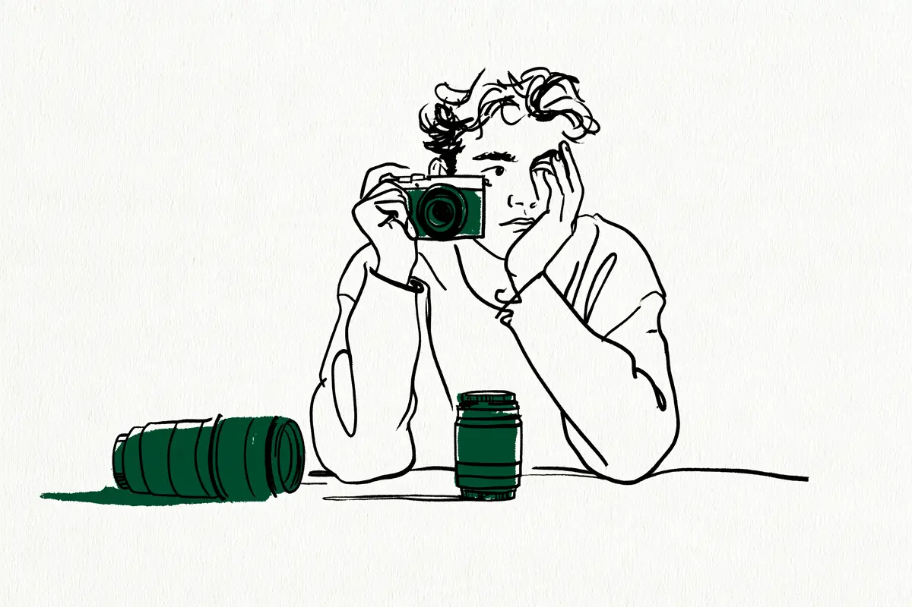

この記事には広告(アフィリエイトリンク)が含まれます。
現在地: 買う前に迷ってる
キヤノン EOS R50の後悔・デメリット、買った人の不満と手放した理由

EOS R50を自分で買った・使っていると書いた39人のうち、本体を買って後悔したと書いた人はいませんでした。ただ、使用3回で手放すか迷っている人が1人、最初からフルサイズ(よく使われる中で一番大きいセンサーの規格。言葉の意味)でもよかったかもと書いた人が1人います。不満を書いた24人のうち13人はレンズに触れていて、そのうち8人は本体の不満も一緒に書いています。実際に手放した2人と、手放すか買い替えるかを迷っている6人がいます。8人のうち7人の理由は本体側(握りにくい・使わない・フルサイズが欲しい・荷物・ピント合わせ・動画・物足りない)でした。
EOS R50はキヤノンのミラーレス(センサー=光を受け止める板が見た映像を、画面やのぞき窓で見るタイプのカメラ。言葉の意味)で、2023年3月下旬に発売された機種です。私はカメラを持っていないので、note・個人ブログ20人と知恵袋19人の声を集めて整理する側で、買う・買わないはすすめません。
- まだ買う前で、後悔しないか知りたい → 早見表、レンズの不満、公式の数字と値段
- 買ったばかりで、不満が出てきた → 暗い場所の不満、本体の不満、公式の数字
- 使っていて物足りなくなった → 手放した人・迷った人とR50 Vとの乗り換え
目次
- EOS R50の口コミ早見表: 不満・満足の種類、人数、その人がどうしたか
- 題に「後悔」が入った体験記3本: 本人が書いていたのはレンズと、本体の選び方
- EOS R50のデメリットで多かったレンズの不満: 望遠が足りない、交換が手間、キットが暗い
- 暗い場所・室内の不満: 体育館、博物館、暗所のノイズ
- グリップ・バッテリー・手ブレ補正: まとめ記事で定番の不満は、本人の声では1〜3人ずつ
- 満足した人の声: 軽さ、ピント合わせ、写り
- EOS R50を手放した人2人、手放すか迷った人6人: 何に、なぜ
- R50 VとEOS R50: 逆向きに乗り換えた2人と、公式の違い(ファインダーの有無)
- EOS R50の公式の数字: 質量・撮影可能枚数・連写・手ブレ補正(2026年10月時点)
- 数え方と偏り
- EOS R50は買わない方がいい?読んだ範囲の答え
EOS R50の口コミ早見表: 不満・満足の種類、人数、その人がどうしたか
39人が書いていた不満と満足を、種類ごとに私の読み方で分けました。1人が2つ以上に入ることがあります。右の列は、その種類を書いた人がそのあとどうしたかの例で、1人ずつの話です。
| 種類(私の読み方) | 書いた人数 | その人がどうしたか(例) |
|---|---|---|
| レンズ: 望遠が足りない・交換が手間・写る範囲・暗い・描写 | 13人 | 鉄道撮影で描写とピント合わせに物足りなさ → 中古の望遠レンズを検討(本体は継続) |
| 上位機・フルサイズが欲しくなった | 5人 | 約2年で性能を引き出せたと感じた → 下取りに出してEOS R6 Mark IIへ |
| 暗い場所(体育館・博物館・暗所) | 5人 | 体育館が暗く売って買い直すか迷った → 回答を読んで今のカメラで続けることに |
| 持ち運び・すぐ出せない・荷物 | 3人 | 2年で使用3回、すぐ出せずスマホに → 手放すか迷っている |
| 本体の機能や形: 握りにくい・ピント合わせ・連写・ストロボ・操作・バッテリー・手ブレ補正・ファインダー | 10人(1〜3人ずつ) | 戦闘機にピントが追いつかない → 上位機へのステップアップを検討 |
| 満足: 軽い・小さい・ピント合わせ・写り | 16人 | 買った日は罪悪感があった → どこにでも連れて行くように |
| 重い | 0人 | ― |
39人の結果を、購入リンクの有無で分けて数えると、こうなります。購入リンクの有無は、記事の本文にAmazon・楽天などの商品リンクやアフィリエイトの表記があるかを、保存したページで機械的に確かめました。
| 結果(私の読み方) | 人数 | うち購入リンクのないサイトの書き手 |
|---|---|---|
| 満足 | 16人 | 11人 |
| 満足と不満の両方を書いて使い続けている | 9人 | 5人 |
| 本体は続け、不満をレンズの追加で解決しようとしている | 3人 | 3人 |
| 手放した(買い替えを実施) | 2人 | 2人 |
| 買い替え・手放しを迷っている | 6人 | 6人 |
| 困りごとだけで、評価はない | 1人 | 1人 |
| 買った直後で、評価はまだ | 2人 | 2人 |
迷っている6人は全員が知恵袋の質問者です。知恵袋は困ったときに質問する場なので、迷っている段階の声が集まり、その後どうしたかは書かれていません。集め方と偏りは数え方と偏りにあります。
題に「後悔」が入った体験記3本: 本人が書いていたのはレンズと、本体の選び方
題に「後悔」や「失敗」が入った個人の体験記を3本読みました。本人が後悔や失敗として書いていたのは、こういうことです。
写真素人ツバメさん(カメラの紹介もしているサイトです)は、標準ズームレンズキットを半年使いました。失敗として挙げた10個のうち、手ブレ補正のない望遠レンズを買ってすぐ売ったこと、SDカードの選び方、家電量販店でほかのメーカーを触らなかったことが並びます。本体についてはこう書き、ニコンやソニーの機種の重さや操作感を店頭で比べればよかったと少し反省している、と続けています。
今のところ後悔しているわけではありませんが、やはり高額な買い物。
ちみみさん(カメラの紹介もしているサイトです)の記事は、検索結果では「後悔ポイント」の題で出ます。ページの見出しは「子供を撮るためCanon EOS R50を使ってみてわかった「こうすればよかった」話」で、こうすればよかったと書いているのは2つ。1つは2か月後に買い足したRF35mm F1.8 MACROの写る範囲。室内で子どもを撮るには狭く、24mmにすればよかった、という話です。
中途半端だったなと今になって思います
もう1つは本体の選び方で、最初からフルサイズでもよかったかも、最初の1台は中古でもよかったかも、と同じ重さで書いています。今はフルサイズのEOS R8がちょっと欲しい、とも。軽さについては間違っていなかった、という人です。
3本目の小野正樹さん(カメラの紹介もしているサイトです)は、小学生のころから一眼レフを使う経験者で、R50は予備機。題の「後悔している人」はコスプレ撮影をする人たちについての伝聞で、本人はこう書いています。
予備機としても役立つし、Canon EOS R50を購入したことは全く後悔していない。
伝聞の部分には人数の根拠がないので、この記事では数えていません。Redditにも「買って後悔」と題したR50の投稿がありましたが、本文が読めなかったので数えていません。
EOS R50のデメリットで多かったレンズの不満: 望遠が足りない、交換が手間、キットが暗い
不満を書いた24人のうち13人は、レンズに触れていました。R50はレンズを交換できるカメラです。買い方が分かる23人のうち15人はダブルズームキットでした。本体に、広い範囲を写す標準ズームと、遠くを大きく写す望遠ズームの2本が付いたセットです。レンズの不満は、望遠が足りない、2本を交換する手間、写る範囲、暗さ(ボケない・光が足りない)、描写(写りの細かさや、周辺の写り方)の5つに分かれます。
望遠が足りない・交換が手間。 テーマパークと子どものスポーツに集まっていました。ディズニーでパレードとグリーティングを撮る質問者は、2本のレンズを交換する手間がかかるので、レンズか本体の買い替えを考えています(2026年)。子どもの野球のためにダブルズームを買った質問者は、100-400mmをすすめられて追加で買おうとしていました(2025年)。野球観戦で使ったことがある回答者は、席によると答えています。
最前列とか選手に近い席だと付属のレンズでも綺麗に撮れますが遠いと顔とかはっきりわからないです。
鉄道を1年撮った質問者は、本体は続けて、レンズを足す側。Lレンズは、キヤノンの上位のレンズの呼び名です。
1年使い続けて今のレンズの描写やAF性能に物足りなさを感じるようになり、憧れのLレンズの購入を検討しています
反対に、セットの望遠ズームの出番がなくなった人もいます。推しのお笑いライブを撮るタマムシさんは、Kiss X10とM2を借りて試してからダブルズームを買いました。セットの望遠は、あとで買ったタムロンの18-300mm(1本で広い範囲から超望遠まで写すレンズ)に出番を取られています。
・セットだった方のズームレンズの出番が無い。
写る範囲。 R50のセンサーはAPS-C(フルサイズより一回り小さい規格)で、レンズに書かれた焦点距離(写す範囲の広さを決める数字。言葉の意味)の約1.6倍と同じ範囲が写ります。キットの標準ズームは18mmから始まるので、私の計算では約29mm相当です。2023年の知恵袋の回答者は、ここを短所に挙げていました。
✕キットレンズの広角端が28mm(フルサイズ換算)のスタート。24mmスタートが欲しい。
カメラ歴15年で元量販店のカメラ担当というNEKOさん(カメラの紹介もしているサイトです)も同じです。欠点を挙げた記事で、キットが18mmから始まることを一番がっかりした点にしています(2024年公開・2026年更新)。ちみみさんの35mmが室内で狭かった話も、同じ写る範囲の話です。
暗さと描写。 写真素人ツバメさんは、キットの標準ズームで花や人物を撮るとボケが物足りなかった、と。ボートレースを撮る沙野さんも、キットのF値(光の通り道の広さを表す数字。小さいほど多くの光が通る。言葉の意味)を、妥協した点に挙げました。知人との集まりで試し撮りをした質問者は、小型軽量なのに機能の多さと画質の良さに驚いています(2024年)。そのうえで、絞りを開けて撮った写真の周辺の光の流れ(コマ収差)が気になっていました。
レンズを足した人の声。 単焦点(写る範囲が決まったレンズ。言葉の意味)を買うかどうかの質問に、R50を使っている回答者が答えていました。
R50使っています、ポートレートにはいいですが普段使いに50mmはちょっと使いづらいです。
この回答者は30mm F1.4か18-50mm F2.8を常用している、と続きます。子どもを撮るすけろぐさん(カメラの紹介もしているサイトです)は、本体とRF50mm F1.8の組み合わせで大満足。記事は、次は望遠レンズも欲しくなってきた、で締められています。2023年の回答者が「安価な交換レンズが少ない」を短所に挙げていた一方で、2025〜2026年の声には他社のレンズを検討・常用する人が出てきます。声の年で、選べるレンズの事情が違う可能性があります。
暗い場所・室内の不満: 体育館、博物館、暗所のノイズ
暗い場所の不満は5人でした。日常と料理を撮る津村璃音さん(カメラの紹介もしているサイトです)は、ダブルズームを3か月使って概ね満足としたうえで、こう書いています。
やはりどうしても暗所で撮影をしないといけないタイミングはあって、そんな時に性能不足を痛感してしまう。
1年後くらいにフルサイズへステップアップしたい、という人です。子どものバスケを体育館で撮る知恵袋の質問者は、買った翌週に、売って買い直すか迷っていました(2025年)。
しかし、体育館が暗いこともありもう少し綺麗に撮りたいなと思いました。
回答を読んで、知識0の自分にはこのカメラで十分だと分かった、外で撮る分には大満足、とお礼に書いて、続ける側になりました。バイクと博物館を撮る風牙さん(カメラの紹介もしているサイトです)は、暗い屋内と展示ケース越しが難しく、スマホの手軽さに負けて挫折寸前でした(2026年)。それでも手放さない理由がある、と続きます。明るさと撮影範囲を不満点に書いてフルサイズを検討している質問者は、手放した人・迷った人の節の4番です。
手ブレについては、写真素人ツバメさんが、手ブレ補正のない望遠レンズ(RF75-300mm)で手ブレを量産し、新品で買ったのにすぐ売っています。キヤノンの仕様表では、R50本体の手ブレ補正(カメラの揺れを打ち消す仕組み。言葉の意味)は非搭載です(公式の数字)。暗い場所で何が起きているかの仕組みと、自分の写真で確かめる手順は、暗い場所でブレる・ザラザラになるのはなぜ?に分けて書きました。ズームの望遠側で光が入りにくくなる話は室内でズームするとブレやすい理由にあります。
グリップ・バッテリー・手ブレ補正: まとめ記事で定番の不満は、本人の声では1〜3人ずつ
本体の機能や形の不満を1つでも書いた人は10人で、種類ごとには1〜3人ずつでした。
グリップ(握る部分)。 握りにくくて買い替えを検討している人が1人います(2026年)。
Canon R50を使っているのですが、ボディが握りにくく、買い替えを検討しています。
テーマパークでグリーティングやパレードを撮っています。NEKOさんの欠点の1つは、グリップが浅く超望遠レンズを付けたときのバランスが悪いこと。2023年の回答者は、グリップが小さくて持ちにくいらしいが自分は気にならない、という書き方でした。
連写(連続撮影)。 RAW(あとで自分で仕上げるための生のデータ。言葉の意味)で連写すると止まる、という声が2人です。
撮影画質をJPEGオンリーにしないとまともに連写できませんでした。
NEKOさんも同じ点を欠点に挙げています。キヤノンの仕様表では、連続撮影可能枚数はJPEGラージで約42枚、RAWで約7枚なので、止まるのは仕様の範囲です。
バッテリー。 本人の体験として書いたのはNEKOさんだけで、良いとは言えない、という評価でした。自分は1個で500〜700枚前後撮っている、ともありますが、これは本人の撮り方での数字です。公式の撮影可能枚数は、カメラの業界団体CIPAの基準で、30秒に1枚・23℃などの条件で測った数字なので、測り方が違います。まとめ記事にある「1日持たない」という不満は、本人の声としては見つかりませんでした。
ストロボ(外付けのフラッシュ)。 小野正樹さんが挙げたのは、カメラ上部の取り付け口が新しい規格(マルチアクセサリーシュー)であることです。従来のストロボや、ストロボを離れた場所から光らせるトリガーがそのまま使えず、アダプターが要ります。
そんな訳でCanon EOS R50はガイブストロボの利用に関して課題を抱えている。
外部ストロボのことです。GODOXのトリガーが接続できなかった質問者も1人いて、回答はアダプターが必要という内容でした(2024年)。2023年の回答者も同じ点を短所に挙げています。
操作。 NEKOさんは、電子ダイヤルが1つしかないことを挙げました。全自動で手動ピントが使えないことを質問した人は、全自動(シーンインテリジェントオート)でピントを手動にできないのが、たまに不便だそうです(2026年)。星景と飛行機を撮る人は、多重露出(1枚の写真に複数の露光を重ねる機能)がないことを挙げました(手放した人・迷った人の節の6番)。ファインダー(のぞき窓)の不満は、暗いところで表示がカクカクするというNEKOさんの1人だけです。
重さ。 重いと書いた人は0人でした。持ち運びや荷物を負担に挙げた人は3人です。逆に、軽さや小ささを良い点や決め手に書いた人は14人いました。津村璃音さんは、毎日持ち運べているのはこの軽さによるところが大きい、と書き、沙野さんは、ほんとうに軽い、と。公式の質量は公式の数字の表にあります。
満足した人の声: 軽さ、ピント合わせ、写り
満足と読んだ16人のうち、購入リンクのないサイトの書き手は11人です。使い始めて数日から数週間の人も含みます。52歳でヨドバシAkibaで即決した南野由宇さんは、帰りの電車で罪悪感が芽生え、ほんとによかったのかなと思いました(2026年)。その後はこうなりました。
私はこの相棒を、どこに行くにも面倒がらずに連れて行くようになった。
R10と迷い、スペックはR10が上と思いつつフィーリングでR50にした、という人です。R10を買った人の不満と手放した理由はEOS R10の記事に。EOS R6 Mark IIも持っている知恵袋の回答者は、R50は良いカメラだと答えていました(2024年)。
小さいし旅行にも邪魔になりません。
同じ質問には、上位機種の機能まではいらなかったがR100は嫌だったのでR50にした、という回答者もいます。ダブルズームを買ったひびの。さんは、高額な買い物でどきどきだったけど買ってよかった、と(2026年)。コンデジ(レンズを交換できない小型のカメラ)で競馬を撮っていた白井さんは、写りと狙いどおりに撮れる割合が明らかに良くなりました(2026年)。ディズニーのパレードを撮る迷える子羊さんは、上位機のR5やR6に手を出したくなるが今のカメラで、という人です。沙野さんは、ダブルズームを買ってボートレースを初めて撮った時点で、楽しい、買ってよかった、と書いています(2025年)。
購入リンクのあるサイトの満足側は5人です。車を撮るHIDEちゃんさん(カメラの紹介もしているサイトです)は、ピント合わせ(AF、カメラが自動でピントを合わせる機能。言葉の意味)が優秀で、シャッターを押すだけで綺麗に撮れる、と(2026年)。経験者の声もあります。かわこさんは、EOS R6 Mark IIのサブとしてバスケットボールを撮っています(2026年)。設定を見直したら撮れたので、R8 Mark IIに買い替えなくてもよさそう、と。元映像制作会社の宍戸佳希さん(カメラの紹介もしているサイトです)は、動画用に満足していますが、弱点は動画で語るとして本文には書いていません。NEKOさんは欠点を8つ挙げたうえで、画質の面では特に不満を感じたことがない、と1年使った記事に書いています。
EOS R50を手放した人2人、手放すか迷った人6人: 何に、なぜ
本体を実際に手放した人は2人で、どちらも購入リンクのないサイトの書き手でした。迷っている6人は全員が知恵袋の質問者で、結果はまだ書かれていません。8人のうち7人の理由は本体側で、レンズの交換の手間が理由なのは1人です。
平良みかさんは、プロ野球の球場と建築を撮っています。2023年に買ったR50を約2年使い、EOS R6 Mark IIに替えました(2025年)。軽くて手に馴染み、どこへでも一緒に出かけられて本当に頼れる相棒だった、と書いたうえで、こう続けます。
去年くらいから「ちょっと物足りないな」の気持ちは正直ありました。
性能を90%くらいまでは引き出せたと思えたことで、新しいカメラの購入に本腰を入れた、という流れです。
今回、悩んだ末にR50は下取りに出しました。
もう1人は、動画を撮るみとまとさんで、R50からR50 Vに乗り換えました(2025年)。
私の場合、R50はやっはり（無意識の期待が）充たされていなかった。
理由は、もともと動画に期待していたこと。静止画をメインに楽しみたい人にはR50は十分に期待に応える、ファインダーがある分有利、とも添えています(R50 Vの節)。
手放すか買い替えるかを迷っていた6人は、何に・なぜが1人ずつ違いました。
- 握りにくい → 中古のR10か、予算を上げて別の機種か。 テーマパークで撮る質問者。R50の売却資金も充てる予定です(2026年、本体の不満の節。EOS R10を買った人の声)
- 2本のレンズを交換する手間 → レンズか本体か。 ディズニーでパレードとグリーティングを撮る質問者(2026年、レンズの節)
- すぐ取り出せず、使わない → 手放すか。 ペットを撮るために買った質問者で、購入から2年ちょっと、使用3回、丸1年使っていません(2026年)
- 明るさと撮影範囲 → フルサイズのR8かR6 Mark IIか。 フルサイズへの買い替えを相談した質問者(2026年)
- 荷物を減らしたい日に不便 → コンデジを買うか、買い替えるか。 日常・人物・動物を撮る質問者で、家電量販店で現物を触って決めたい、と(2026年)
- 機能とピント合わせ → R5 Mark IIへ。 星景写真と飛行機に挑戦し始めた質問者(2025年)
3の人の言葉です。
ペットの写真を撮りたくて買いましたがすぐに取り出せない為スマホになってしまい結局使ってない状態です。
軽い機種でも持ち出さなかった人の声は、軽くしても持ち歩かなかった人の節にもあります。手放す前に、売るといくらになるかを無料で知る方法は売るなら、まず無料で相場を知るに書きました。6の人は、スマホのデジタルズームに限界を感じて前年に買い、写真が楽しくなってきたところでした。
戦闘機がAF追いつかないのです
ピント合わせの追従性能は機種と設定と被写体で変わるので、この1人の例を一般化はできません。ほかに、売るか迷って続けた人が1人(暗い場所の節)、本体は続けてレンズを足す側が3人(レンズの節)います。買ったあとに後悔した人が機種を問わず何をしたかは、もう買って後悔している人への節にあります。
R50 VとEOS R50: 逆向きに乗り換えた2人と、公式の違い(ファインダーの有無)
EOS R50 Vは、2025年5月下旬に発売された動画向けの機種です。キヤノンの製品一覧には、R50とR50 Vの両方が載っています(2026年10月17日時点)。公式に「R50の後継」と書かれた記述は確認できなかったので、この記事では後継機とは書きません。R50 Vを買った人の声は6人読みましたが、別の機種なので39人には数えていません。
公式の仕様では、センサーの大きさ(約22.3×14.9mm)と画素数(最大約2420万画素)は両機で同じです。違いで声に関係していたのは、ファインダーの有無です。R50には電子ビューファインダー(のぞき込むタイプの小さなモニター。言葉の意味)があり、R50 Vにはありません。R50 Vの発表資料は、ファインダーをなくして動画向けアクセサリーと合わせやすい平らなデザインにした、と説明しています。質量は、R50 Vがバッテリーとカード込みで約370g、R50が約375g(どちらもブラック)。撮影可能枚数は、R50 Vがモニター撮影で480枚、R50がモニター撮影で約440枚。どちらもCIPA基準・常温・省電力優先の値です(R50 Vの仕様、R50の仕様)。
両方を買った人が2人いて、向きが逆でした。みとまとさんは動画のためにR50からR50 Vへ(手放した人・迷った人の節)。古賀若造さんは、EOS 60DからR50 Vに移った約1か月後に、R50に乗り換えました。買ったときはこう書いていました(2026年9月)。
＃個人的にはファインダーがなくても支障がない。
翌月の記事にある理由は、こうです。
R50Vの画質と写真機能が微妙だったし、ファインダーのありがたさがわかったから
R50側はまだ使い始めなので、R50の人数には入れていません。R50 Vに満足した人も読みました。EOS R5の修理中のつなぎに買ったざんぞうさんは、一番の懸念だったファインダーがないことが杞憂に終わった、と(2026年)。家族の動画用に買ったまたべえさん(カメラの紹介もしているサイトです)は、静止画の機能の制限はなかなか厳しい、縦構図のスナップは面白い、と両方を書きました。EOS R6と併用するtaikouさんは買ってよかった側で、向かない人としてファインダーで撮りたい人を挙げています(2026年)。ざんぞうさんとtaikouさんは経験者です。どちらが向くかは、この2人と、みとまとさん・古賀若造さんの4人の例で決まるものではありません。
EOS R50の公式の数字: 質量・撮影可能枚数・連写・手ブレ補正(2026年10月時点)
声に出た不満を、キヤノンの公式ページの数字と並べました。EOS R50の仕様ページと発売時のニュースリリースから、2026年10月17日に取得した値です。
| 項目 | 公式の記載(2026年10月17日取得) | 声との関係 |
|---|---|---|
| 発売 | 2023年3月下旬 | 声は2023〜2026年 |
| 質量 | 約375g(ブラック、バッテリー・カード込み)。本体のみ約328g | 重いと書いた人は0人 |
| 撮影可能枚数(CIPA基準) | ファインダー撮影 約310枚/モニター撮影 約440枚(常温、省電力優先) | バッテリーの不満は1人。本人の枚数とは測り方が違う |
| ボディ内手ブレ補正 | 手ブレ補正機構 非搭載 | 不満は2人。手ブレの体験は補正のないレンズで |
| ファインダー | 電子ビューファインダーあり | 暗所で表示がカクカクする、が1人 |
| 連続撮影可能枚数 | JPEGラージ 約42枚/RAW 約7枚(約12コマ/秒のとき) | RAWの連写が止まる、は2人。仕様の範囲 |
| センサー | APS-C(約22.3×14.9mm)、最大約2420万画素 | キットの18mmは約29mm相当(私の計算) |
手放した・迷った8人のうち7人の理由は本体側(握りにくい・使わない・フルサイズが欲しい・荷物・ピント合わせ・動画・物足りない)でした。表の数字だけでは分からないことです。握りにくさと荷物は、店頭で持ってみれば自分で確かめられます。南野由宇さんはヨドバシで即決し、迷っている質問者の1人は現物を触って決めたいと書いていました。買う前に借りて試した人はタマムシさんの1人で、借りて分かること・分からないことは試したい人は、借りるにあります。仕様は変わることがあるので、表の数字も自分で仕様ページを開いて確かめてください。
楽天市場の検索リンクを1つ置きます。置く条件は、購入リンクのない本人の体験が2人以上あり、不満の側の声があることで、R50は購入リンクのない本人30人、うち不満の側16人なので当てはまりました。私のおすすめではなく、声に出た機種の、いまの値段や在庫の有無を確かめるためのリンクです。下のリンクは『Canon EOS R50』の名前で楽天市場を検索します。2026年10月時点で現行の機種で、R50 Vは別の機種なので検索語に含めていません。
数え方と偏り
数えたのは、自分でEOS R50を買った、または使っていると書いた39人です。内訳はnote・個人ブログ20人(うち3人は最初に買ったカメラの記事でも読んだ人)、知恵袋19人。知恵袋の19人は、困って質問した人か、質問に答えた人です。結果と不満の分け方は私の読み方で、1人が2つ以上の不満に入ることがあります。
偏りは5つあります。
- 探した語の偏り。「後悔」「デメリット」「買い替え」「手放した」「不満」などの語で探したので、不満の側が集まりやすくなっています。「買ってよかった」でも探しました。Googleが途中でボット確認の画面を出したため、検索語は9語で止めています
- 迷っている6人は全員が知恵袋の質問者で、ブログには迷いの記事が少ない、という差があります。知恵袋は質問の場なので、迷っている段階で止まっています
- 39人のうち9人は、購入リンクか広告のあるサイトの書き手で、本文では「(カメラの紹介もしているサイトです)」と添えています。購入リンクのないnote・ブログの11人は、満足8人・手放した2人・買った直後1人。不満の側で購入リンクのない16人は、知恵袋の14人と、手放した2人です
- 経験者が5人います。EOS R6 Mark IIのサブとして使う人、元映像制作会社の人、一眼レフ経験者の予備機の3人。あとはカメラ歴15年の元量販店カメラ担当と、EOS R6 Mark IIも持つ人です。本人の体験として数え、本文に立場を添えました
- 声の年は2023〜2026年で、2023年の声にある「安価な交換レンズが少ない」は、今と事情が違う可能性があります
最初に買ったカメラの記事では、R50を最初の1台として買った4人だけを読みました。今回は最初の1台に限らず、2台目やサブとして買った人も含めて集めたので、手放した2人と、迷っている6人が出てきています。集め方が違うだけで、どちらかが間違いということではありません。
数えなかったものは、次のとおりです。
- 機種名の表記や仕様の記述に誤りが多く、自動生成の文章が混ざっている可能性がある個人ブログ2件(読んだ一覧に理由つきで載せています)
- 本人の購入体験が本文にない、後悔する理由のまとめ記事7件(「〜という不満も」の出典がないもの)
- レンタル事業者への誘導がある、借りて試した記事1件(購入者ではないため)
- 伝聞(コスプレ撮影で後悔している人が多い、など)と、R50を使っていない回答者の一般論
- 購入前の相談、使い方だけの質問、R50を借りた人
- 価格.comの掲示板とレビュー(規約により引用せず、人数にも入れていません)、Reddit(本文が読めず)、照合できないSNSと動画
知恵袋の伏せ字のIDは、同じ表示でも同一人物か確かめられないので、別の人として数えています。
EOS R50は買わない方がいい?読んだ範囲の答え
買わない方がいい、とも、買った方がいい、とも、読んだ声からは言えません。本体を買って後悔したと書いた人は39人の中にいませんでしたが、使用3回で手放すか迷う人と、最初からフルサイズでもよかったかもと書いた人が1人ずついます。不満を書いた24人のうち13人はレンズに触れ、そのうち8人は本体の不満も一緒に書いていました。本体の機能や形の不満を1つでも書いた人は10人で、種類ごとには1〜3人ずつ。重いと書いた人は0人、持ち運びや荷物を負担に挙げた人は3人です。
実際に手放した2人は、使い倒して上位機へ移った人と、動画のためにR50 Vへ移った人。迷っている6人の理由も、握りにくさ・交換の手間・使わない・明るさ・荷物・ピント合わせと、1人ずつ違いました。同じ機種に満足した人と不満を持った人の両方がいることは、機種別の記事で書いたとおりです。私はカメラを持たないので、ここに書いたことは読んだ声の整理で、公式の数字は上の表から自分の目で確かめてください。買う前の順番は初めてのカメラ、最初の一台は何で決めた?にあります。
ほかの機種の声と、買う前の確認
次に読むなら
この記事で読んだ61件
体験談39件(39人の出典。note・個人ブログ22件、知恵袋17件)、R50 Vの体験談7件(6人の出典)、数えなかった個人ブログ・まとめ記事10件、公式ページ5件に分けています。本文で使わなかったものには注記しました。
体験談22件(note・個人ブログ20人の出典)
- note(写真素人ツバメ)「【EOS R50】カメラ初心者がレンズキットを半年使って気づいた「真実」と「失敗」10選」(標準ズームキットを半年、満足。失敗はレンズとSDカードと店頭で比べなかったこと、2025年。カメラの紹介あり)
- note(津村璃音)「カメラ初心者がEOS R50を買って3ヶ月経って思う事」(ダブルズームを3か月、概ね満足と暗所の不満、2026年。カメラの紹介あり)
- note(南野由宇)「52歳、新しい相棒 Canon EOS R50」(ヨドバシで即決、満足、2026年)
- note(沙野(ニル))「カメラ初心者がChatGPTに教えてもらったカメラ〈EOS R50〉でボートレースを撮ってきた話」(ダブルズームで初撮影、満足とRAW連写の不満、2025年)
- note(すけろぐ)「【カメラ初心者】スマホ撮影から一眼へ。二児の父が「Canon EOS R50」を買って正解だった理由」(本体とRF50mm F1.8、大満足、2026年。カメラの紹介あり)
- note(かわこ)「R50と白レンズ」(EOS R6 Mark IIのサブでバスケットボール、満足、2026年)
- note(平良みか)「運命のカメラは自分で決める」(約2年使い、下取りに出してEOS R6 Mark IIへ、2025年)
- note(宍戸佳希)「8万円のシネマカメラ - EOS R50-」(元映像制作会社、動画用に満足、2024年。カメラの紹介あり)
- note(迷える子羊)「25周年のディズニーシーに行ってきた」(超望遠レンズでパレード、満足、2026年。本文では同じ人の次の記事にリンク)
- note(迷える子羊)「おしゃれ小物としての「カメラ」」(同じ人、上位機に手を出したくなるが今のカメラで、2026年)
- note(ハタ)「【第1回】ジンバルは不要?Canon R50ダブルズーム×Ace Pro 2の「2台持ち」が初心者の最適解だと確信した理由」(ダブルズームと小型カメラの2台体制、満足、2026年。本文では人数に入れただけです)
- note(みとまと)「EOS R50 V ついに!」(動画のためR50からR50 Vへ乗り換え、2025年)
- アメブロ(ちみみ)「子供を撮るためCanon EOS R50を使ってみてわかった「こうすればよかった」話」(こうすればよかったのは買い足したレンズの写る範囲と本体の選び方、軽さは正解、2026年。検索結果の題は「Canon EOS R50を使ってわかった後悔ポイント|初心者が知っておきたかったこと」。カメラの紹介あり)
- 節約フォトグラファー(小野正樹)「コスプレ撮影でCanon EOS R50を購入して後悔している人の話」(経験者の予備機、本人は後悔なし、ストロボの課題、2025年。カメラの紹介あり)
- digi-cam.net(NEKO)「中級者から見たEOS R50の欠点はココ！忖度無しの辛口レビュー」(カメラ歴15年、欠点8つ、2024年公開・2026年更新。カメラの紹介あり)
- digi-cam.net(NEKO)「EOS R50レビュー！１年間徹底的に使い込んでわかったこと」(同じ人、画質に不満なし、バッテリーの枚数。カメラの紹介あり)
- フウガブログ(風牙)「【カメラ初心者】去年買ったEOS R50で挫折寸前？スマホの便利さに絶望しつつも手放せない理由」(持ち運び・レンズ交換・暗所に困りつつ手放さない、2026年。カメラの紹介あり)
- 楽天ブログ(HIDEちゃん)「はじめてのミラーレス購入（Canon EOS R50）」(ダブルズームで車、満足、2026年。カメラの紹介あり)
- note(よっしー)「カメラ初心者の私が「Canon EOS R50」を相棒に選んだ理由」(α6400と迷って購入、使用前、2026年。本文では人数に入れただけです)
- note(白井)「何を何で撮りたいのか（1/2）」(コンデジからR50へ、競馬、満足、2026年。機種別の記事でも読んだ人)
- note(タマムシ)「推しを綺麗に撮りたい私(初心者)のカメラ&レンズ選び」(借りて試してからダブルズーム、セットの望遠はタムロン18-300mmに出番を取られた、2026年。同じ人の2024年の記事も読みました。機種別の記事でも読んだ人)
- note(ひびの。)「カメラを買ったよ」(ダブルズーム、買ってよかった、2026年。機種別の記事でも読んだ人)
体験談17件(知恵袋19人の出典。同じ質問の質問者と回答者は別に数えています)
- 「Canon R50を使っているのですが、ボディが握りにくく、買い替えを検討しています。」(質問者えだまめ、グリップで買い替え検討、2026年)
- 「今現在初心者モデルのキャノンR50を使用しているのですが、ダブルレンズキットだとパレードとグリとでレンズを交換する手間がかかり、買い替えを考えています。」(質問者1150456854、レンズか本体の買い替えを検討、2026年)
- 「EOS R50のホワイトを手放そうと思っています。」(質問者c3153432c、使用3回で手放すか迷う、2026年)
- 「カメラ買い替えについて質問です。」(質問者非公開、明るさと撮影範囲でフルサイズを検討、2026年)
- 「現在CANON EOS R50を使用しています。」(質問者41236578、荷物を減らしたくコンデジを検討、2026年)
- 「子供の野球撮影の為キャノンのR50 望遠レンズセットを購入したのですが、100-400の方がいいですよとの事だったので、追加で購入しようとしています。」(質問者b32dd50e1、望遠を追加、2025年)
- 「冬ボでeos r50を購入しようとして我慢できなくて貯金切り崩してeos r50購入した物です」(質問者は購入直後で評価なし、回答者a697e35caは50mmより30mm・18-50mmを常用、2025年)
- 「Canon EOS R50を買いました。」(質問者知恵袋ユーザー、小型軽量で画質に驚きつつコマ収差が気になる、2024年)
- 「Canon EOS R50 の定直レビューがほしいです。」(回答者tofu_******とID非表示の2人、満足、2024年。質問者は購入前なので数えていません)
- 「ミラーレス一眼カメラを買おうとしているのですがcanon eos r50を買うか、nikon z50を買うかで迷ってます。」(回答者tom********、◯と✕を列挙、2023年。質問者は購入前なので数えていません)
- 「【カメラレンズ】Canon eos r50を使ってるのですが、ダブルズームキットを使っているのですが望遠の距離が物足りなくこだわりもないので安さを求めてsigmaの100-400mmを買おうと思ってます。」(質問者ケーキ、望遠を追加、2025年)
- 「キャノンR50を使用している 初心者です」(質問者lat********、AFと機能で上位機を検討、2025年)
- 「EOS R50のダブルズームキット（RF-S18-45mm / RF-S55-210mm）を使用して1年ほど鉄道撮影を楽しんでいます。」(質問者a、描写とAFの物足りなさで中古のLレンズを検討、2026年)
- 「カメラ初心者にはCanon EOS R50 が良いそうで、電気屋でもお勧めされたので購入を検討しています。」(回答者tmr********、R50を使ったことがあり野球観戦は席による、2024年。質問者は購入前なので数えていません)
- 「カメラ初心者です。」(質問者kur********、ストロボのトリガーが接続できない困りごと、2024年)
- 「自分はEOS R50を使っているんですが、シーンインテリジェントオートにはなぜMFがないんですか？」(質問者、全自動で手動ピントが使えずたまに不便、2026年。ハンドルが実在の人物と同じ表記のため記事では名前を出していません)
- 「EOS R50について質問です。」(質問者shi********、体育館が暗く売るか迷い、回答を読んで継続、2025年)
R50 Vの体験談7件(6人の出典。39人には数えていません)
- note(小野正樹)「【写真エッセイ】さらばCanon EOS R50v」(娘の修学旅行用に買ったが、娘さんが高価で怖いと古いデジカメを選び、14万円で買って7万円で手放した、2025年。上のnekobokoの記事と同じ書き手。本文では使っていません)
- note(ざんぞう)「EOS R5の代わりにR50 Vを買ったら、思った以上に良いカメラだった」(R5の修理中のつなぎ、EVFなしの不安は杞憂、2026年)
- note(taikou)「R50Vを使ってみた!」(EOS R6と併用、買ってよかった、2026年)
- note(またべえ)「EOS R50Vを購入した話。」(家族の動画用、静止画の制限は厳しい、2026年。カメラの紹介あり)
- note(古賀若造)「9.6 初めてミラーレスカメラ(eos r50v)を買ってみたよ」(EOS 60DからR50 Vへ、2026年)
- note(古賀若造)「10.10 晴れの写真集11号…#EOS R50を使い始めます」(同じ人、約1か月でR50に乗り換え、2026年。題の一部を省略)
- Yahoo!知恵袋「キャノンR50Vレンズキットを、 子供達の日常撮影用に購入しました。」(質問者1051412026、満足して望遠を検討、2025年。本文では使っていません)
数えなかった個人ブログ・まとめ記事10件
- とりとららブログ「カメラ初心者の私がCanon EOS R50を選んだ理由と使ってみた感想【旅行にもおすすめ】」(本文の大半で機種名が「Canon Ios E50」「E50」と書かれ、R50に付かない規格のレンズをすすめているため、自動生成の文章が混ざっている可能性があり数えていません。2025年。カメラの紹介あり)
- YB Blog(YB太郎)「【壊れやすい？最悪？】Canon EOS R50を実際に使ってわかった本音レビュー｜初心者に本当におすすめできるのか検証！」(他社レンズの対応について、ほかのページの記述と食い違う内容があり、経歴の記述にも矛盾があるため数えていません。2025年。カメラの紹介あり)
- アルパカプリン「EOS R50を買うと後悔する？ダブルズームキットをレンタルして確かめてみた」(レンタルで2泊3日。購入者ではなく、レンタル事業者への誘導があるため数えていません。2026年)
- なるほど編集部「EOS R50は後悔する？買わない方がいい理由と本音レビューを徹底解説」(まとめ記事。本人の購入体験がなく、不満の出典もありません)
- 後悔したくない！「EOS R50を買って後悔？デメリットと失敗しない選び方」(まとめ記事、同上)
- 魅惑の中望遠「EOS R50で後悔する理由 買ってはいけない人と後悔しない選び方」(まとめ記事、同上)
- カメラマニア「Canon EOS R50で後悔しないための完全ガイド｜よくある悩みと解決策を徹底解説」(まとめ記事、同上)
- タスク｜集合知デスクラボ「Canon EOS R50の口コミ・評判｜AFまかせで本格写真が撮れる【2026】」(口コミのまとめ、同上)
- ログカメラ「予算15万円・動画重視の場合、EOS R50／R10は買うべき？iPhone 17 Proとの比較相談」(相談形式の記事、本人の購入体験なし)
- アメブロ(ichigo-ichie-01)の記事(まとめ記事、本人の購入体験なし。題は取得したページで確認できませんでした)
公式ページ5件
- キヤノン EOS R50 仕様(質量・撮影可能枚数・手ブレ補正・ファインダー・連続撮影可能枚数・センサー。2026年10月17日取得)
- キヤノン ニュースリリース「ミラーレスカメラ“EOS R50”と“RF-S55-210mm F5-7.1 IS STM”を発売」(2023年2月8日)(2023年3月下旬発売。2026年10月17日取得)
- キヤノン レンズ交換式カメラ 製品一覧(EOS R50とR50 Vが両方掲載。2026年10月17日取得)
- キヤノン ニュースリリース「動画性能を重視したミラーレスカメラの新シリーズ「EOS V series」の“EOS R50 V”を発売」(2025年3月27日)(2025年5月下旬発売、ファインダーをなくした理由。2026年10月17日取得)
- キヤノン EOS R50 V 仕様(質量約370g、モニター撮影480枚、センサーと画素数はR50と同じ。2026年10月17日取得)
引用は2026-10-17時点で各ページを閲覧して確認しました。